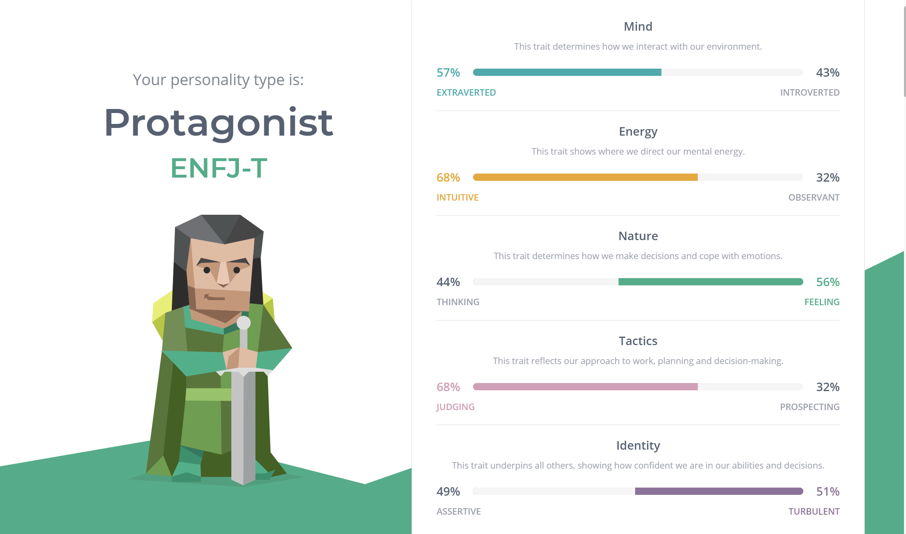
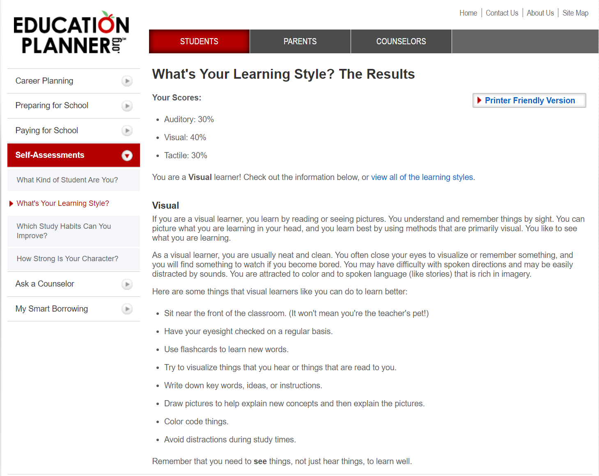
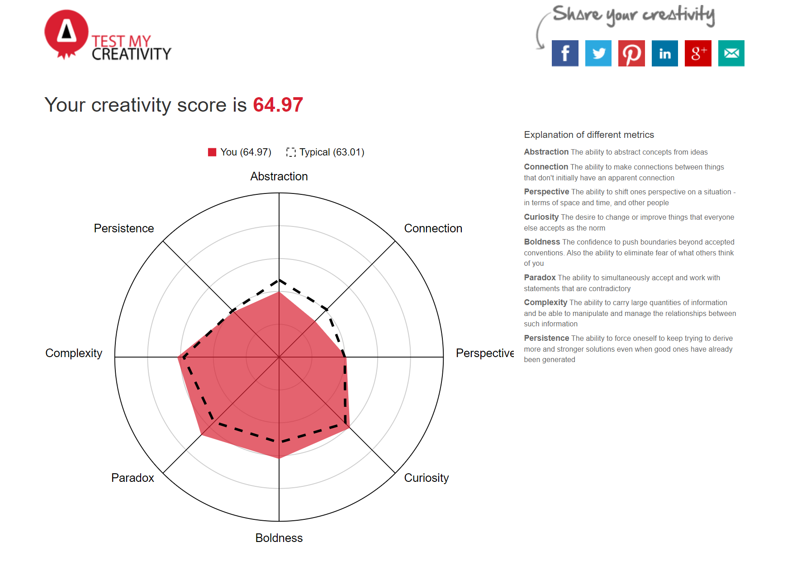

Personal Information
Myers Briggs Type Indicator

Online Learning Test (EducationPlanner)

Creativity Test

What do the results of these tests mean for you?
While these test results can show a general indication of qualities and attributes, I possess I believe they are still general in nature. It draws a sense of validity to the way I have been working in team scenarios in the past. All test results should however be taking into consideration but being human a generalisation cannot confine me teamwork traits.
How do you think these results may influence your behaviour in a team?
The results of these three-tests will not influence the behaviour I have in my team as they are all explaining qualities which I have been demonstrating in in team working scenarios my whole life. I understand where my strengths and weaknesses lay and work towards what I can do very well and get help from the team members which may do things better. As stated in the paragraph above the results of the tests hold validity to my current work style and I believe would be more useful to those who have yet to understand which areas in study they are good at and not. From the Myers-Briggs test I will hold a strong sense of leadership in team scenarios and help teammates when can. The learning test has shown in the beginning of group work I should visualise and brainstorm the process before commencing. Lastly the creativity test has shown I do hold an average to above average sense of creativity and should really take into consideration other team members opinions whose creativity could be higher than mine.
How should you take this into account when forming a team?
When forming a team, I should consider these results understand my strengths and weaknesses to use them as an advantage to maximise productivity.